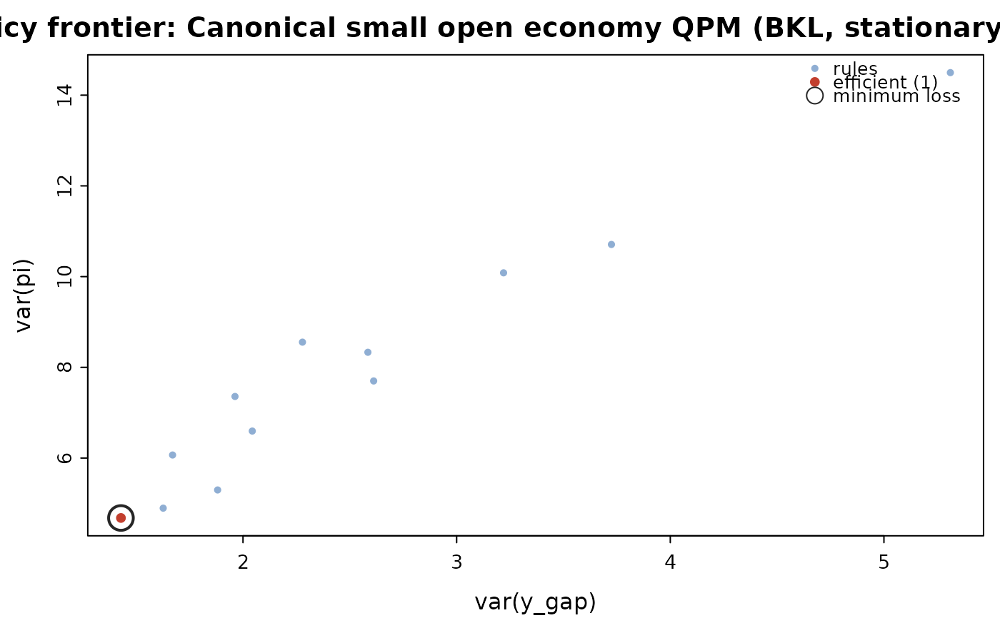

Answers the question a policy committee actually asks — what if we responded differently? — by re-solving the model over a grid of rule parameters and scoring each one by the unconditional loss $$L = sum_v w_v var(v) + sum_v w^d_v var(v - v_{-1})$$ computed from the model's stationary covariance rather than by simulation, so it is exact. Tracing the resulting variance pairs gives the inflation-output variability frontier (the Taylor curve).
Arguments
- model
A
qpm_model.- grid
A data frame of parameter values, one row per rule and one column per parameter (e.g. from
expand.grid()).- loss
Named weights on the variances of levels, e.g.
c(pi = 1, y_gap = 0.5).- diff_loss
Named weights on the variances of first differences, e.g.
c(i = 0.5)to penalise instrument volatility.- x
A
qpm_rule_eval.- xvar, yvar
Axes of the frontier. Either a variable name, whose level variance is used, or a scored column name directly — so
xvar = "vard_i"traces the classic trade-off against instrument volatility. Defaults to the first two entries inloss.- ...
Unused.
Value
A data frame of class qpm_rule_eval: the grid, the variance
of each targeted variable, the loss, and the Blanchard-Kahn outcome.
Details
Rules that violate Blanchard-Kahn are reported as such rather than dropped: a policy response too weak to deliver determinacy is a finding, not a missing row.
Examples
m <- qpm_template("bkl")
grid <- expand.grid(c2 = c(1.2, 1.5, 2, 3), c3 = c(0, 0.5, 1))
ev <- qpm_rule_eval(m, grid, loss = c(pi = 1, y_gap = 0.5),
diff_loss = c(i = 0.5))
ev
#> <qpm_rule_eval> Canonical small open economy QPM (BKL, stationary trends) - 12 rules
#> loss: 1*var(pi) + 0.5*var(y_gap) + 0.5*var(di)
#> best 8 by loss:
#> c2 c3 var_pi var_y_gap var_i vard_i loss
#> 3.0 1.0 4.679 1.429 5.469 1.358 6.073
#> 3.0 0.5 4.896 1.627 5.298 1.305 6.362
#> 3.0 0.0 5.297 1.881 5.188 1.265 6.870
#> 2.0 1.0 6.067 1.670 5.948 1.285 7.545
#> 2.0 0.5 6.595 2.043 5.761 1.247 8.241
#> 1.5 1.0 7.358 1.963 6.460 1.287 8.982
#> 2.0 0.0 7.700 2.612 5.734 1.237 9.624
#> 1.5 0.5 8.332 2.585 6.272 1.268 10.258
plot(ev)
